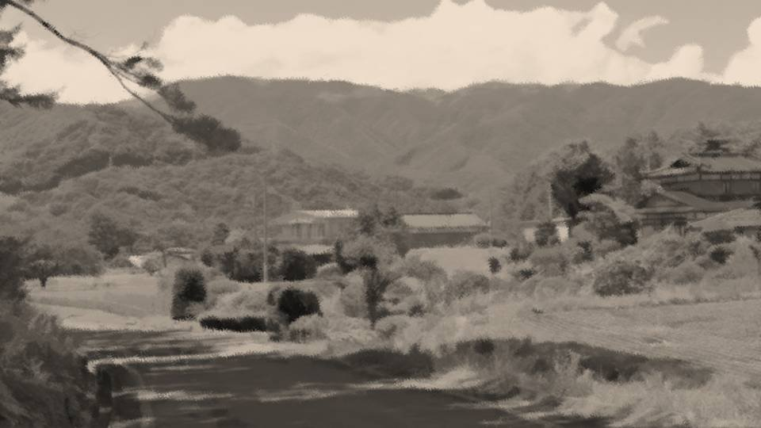

Script 0000170A
祀耀737年。
ある小さな町で、それは起きたのだ。
ある小さな町で、それは起きたのだ。

佐波県佐波郡元木町――当時の人口は2000人に満たない小さな自治体。
祀耀737年の三月、この町で、ある怪奇現象が起きたと言われている。
祀耀737年の三月、この町で、ある怪奇現象が起きたと言われている。
それを見つけたのは、当時元木町に住んでいた金井桂子さん。
桜が咲き始めたその季節、金井さんはあるものを発見する。
桜が咲き始めたその季節、金井さんはあるものを発見する。

 video: 桜.wmv
video: 桜.wmv「こんなところに桜の木なんてあったかしら……」
金井さんが見つけたのは、大きな桜の老木であった。
他の桜の木よりもひときわ大きく、ひときわ貫録を放つその神々しさ。
しかし、金井さんは妙な感覚に取り憑かれたのだ。
金井さんが見つけたのは、大きな桜の老木であった。
他の桜の木よりもひときわ大きく、ひときわ貫録を放つその神々しさ。
しかし、金井さんは妙な感覚に取り憑かれたのだ。
video: 桜.wmvなぜなら、今までこんなに桜の木は見たことがないからだ。
金井さんはこの道を毎日のように通り、近くの井戸へ水を汲みに行っていた。
つまり、金井さんにとって、この桜の木は突然現れたというわけだ。
すぐさま金井さんは周辺住民を呼んだ。
金井さんはこの道を毎日のように通り、近くの井戸へ水を汲みに行っていた。
つまり、金井さんにとって、この桜の木は突然現れたというわけだ。
すぐさま金井さんは周辺住民を呼んだ。
video: 桜.wmv「ん……こんな木、あったかな……」
「この道を毎日通るのは金井さんだけだからなあ……」
「あったと言われればあった気がするし、なかったと言われればなかった気がするし……」
「この道を毎日通るのは金井さんだけだからなあ……」
「あったと言われればあった気がするし、なかったと言われればなかった気がするし……」
video: 桜.wmv当時、金井さんは1人暮らしで、この道を毎日通るのは金井さんだけ。
そのため、他の住民たちの記憶もあいまいだった。
そのため、他の住民たちの記憶もあいまいだった。
video: 桜.wmv「でもまあ、こんな立派な桜が急に現れたって言うなら、神様と思って祭った方がいいんじゃないか？」
「確かに、このまま放っておくには立派過ぎるもんなあ」
口々にそのように述べる住民たち。
彼らは、この桜の木を元木町の御神木として祭ることとし、それがやがて現在の元木町のシンボルとなったのだ。
「確かに、このまま放っておくには立派過ぎるもんなあ」
口々にそのように述べる住民たち。
彼らは、この桜の木を元木町の御神木として祭ることとし、それがやがて現在の元木町のシンボルとなったのだ。
video: 桜.wmvそして現代――。
 video: 桜.wmv
video: 桜.wmv御神木は元木町の中央公園で今も祭られており、そのおかげもあってか元木町は全国でも有数の桜の名所となった。
video: 桜.wmvしかし、御神木がなぜ突然この地に生えたのか。
金井さんの記憶違いだったのか、我々の想像すら及ばない超常現象が裏にあるのか。
そんな我々の疑問をしり目に、御神木は今も元木町を見守り続けている。
金井さんの記憶違いだったのか、我々の想像すら及ばない超常現象が裏にあるのか。
そんな我々の疑問をしり目に、御神木は今も元木町を見守り続けている。